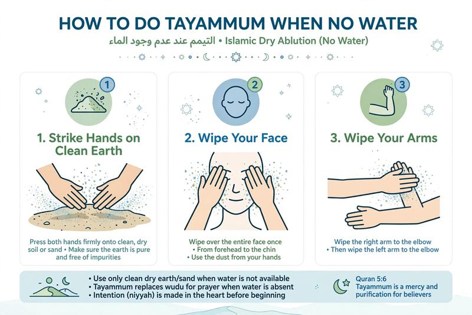

How to Do Tayammum When No Water: Step by Step Guide in Islam

What if you need to pray but there is no water? Or you are sick and cannot use water? Islam is easy - Allah gave us Tayammum (dry ablution) as an alternative to wudu and ghusl.
In this guide, you will learn when tayammum is allowed, what you can use for tayammum, and how to do it step by step.
Table of Contents
- What is Tayammum?
- When is Tayammum Allowed?
- What Can You Use for Tayammum?
- How to Do Tayammum Step by Step
- What Breaks Tayammum?
- FAQs
What is Tayammum?
Tayammum is dry purification using clean earth/dust when water is not available or cannot be used. Allah says: "...and you find no water, then seek clean earth and wipe over your faces and your hands [with it]." [Quran 5:6]. It replaces both wudu and ghusl.
When is Tayammum Allowed in Islam?
- 1. No water available: Traveling, desert, or water cut off and you cannot find water nearby.
- 2. Sick or injured: Using water will make you sick, delay healing, or cause harm. Must be based on doctor advice or strong experience.
- 3. Water is too cold and you cannot heat it: And using it may cause illness.
- 4. Water needed for drinking: If you have little water and need it for drinking to survive, you do tayammum.
- 5. Cannot access water: Water is nearby but you cannot reach it due to danger, prison, etc.
What Can You Use for Tayammum?
You can use any clean earth surface that has dust:
- Clean dust, soil, sand
- Stone with dust on it
- Earth, wall made of mud/brick with dust
- According to many scholars, any clean earth surface even without visible dust
You CANNOT use wood, metal, glass, or fabric unless it has dust on it.
How to Do Tayammum Step by Step
Tayammum is very simple and takes 30 seconds:
Step 1: Make Intention (Niyyah)
Intend in your heart that you are doing tayammum to allow yourself to pray. Example: "I intend tayammum instead of wudu/ghusl for prayer."
Step 2: Say Bismillah
Say "Bismillah" as you do for wudu.
Step 3: Strike the Earth Once
Strike both palms lightly on clean earth/dust once. Blow lightly to remove excess dust.
Step 4: Wipe Your Face
Wipe your entire face with both palms once, as you do in wudu.
Step 5: Wipe Your Hands to Elbows (or to Wrists)
There are two authentic methods:
- Majority method: Wipe right hand over left hand up to wrist, and left over right up to wrist.
- Other authentic method: Wipe arms up to elbows. Both are valid, but wiping to wrists is simpler and has strong evidence from hadith of Ammar ibn Yasir [Bukhari & Muslim].
We recommend the wrist method for beginners - it is easiest.
📚 Tayammum Completed - Now Time for Salah
You have completed the Taharah series! Now you are ready to pray:
What Breaks Tayammum?
Tayammum breaks with:
- 1. Everything that breaks wudu breaks tayammum
- 2. When water becomes available - your tayammum ends and you must use water
- 3. When the excuse ends (you become able to use water safely)
One tayammum is enough for one or more prayers until it breaks, or water is found.
Common Mistakes
- Hitting earth multiple times - One strike is enough for both face and hands.
- Using dirty surface - Must be clean (tahir) earth.
- Doing tayammum while water is available nearby - You must search for water first.
📚 Explore All Our Purification & Salah Guides
Frequently Asked Questions
Can I do tayammum if water is very cold?
If cold water will cause illness and you cannot heat it, yes you can do tayammum. If you can heat it or bear it, you must use water.
How long does tayammum last?
Tayammum lasts until it breaks (like wudu) or until water becomes available. You can pray multiple prayers with one tayammum if it didn't break.
Can I pray Fajr with tayammum?
Yes, you can pray any prayer including Fajr with tayammum. Learn how to pray Fajr step by step after this.
Do I need to do ghusl or tayammum for janabah if no water?
If you are in janabah and no water is available, tayammum replaces ghusl. Strike earth once, wipe face and hands, and you are pure to pray.